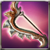

Crescemento Cresent
Available to equip above Lv. 1 - Recruitment character
Great Sword that is decided the A.R. and ATK Power according to the players level.
[ATK SPD -15%]
Max 6 enhancement possible.
Attributes
Rating: 0
ASPD: -15
ASPD: -15
 Melee Weapon Crystal - Lv 35 x2
Melee Weapon Crystal - Lv 35 x2 Star Stone x50
Star Stone x50 kryptonite x200
kryptonite x200 Enchantchip Veteran x100
Enchantchip Veteran x100 Elemental Jewel x10
Elemental Jewel x10 Fool Stone x1
Fool Stone x1 Symbol of Naraka x100
Symbol of Naraka x100 Enchantchip Expert x50
Enchantchip Expert x50 Powdered jewel x10
Powdered jewel x10 Pure Otite x30
Pure Otite x30 Pure Quartz x100
Pure Quartz x100 Pure Etretanium x100
Pure Etretanium x100 Dragon Heart x1
Dragon Heart x1 Composite steel x100
Composite steel x100 Mega Aidanium x100
Mega Aidanium x100 Wheel of Time x100
Wheel of Time x100 Ancient Rune - Ti x50
Ancient Rune - Ti x50 liquid of Heaven x10
liquid of Heaven x10 Armonias Holywater x10
Armonias Holywater x10 Moon Stone x5
Moon Stone x5 a lump of Platinum x3
a lump of Platinum x3 Shiny Crystal x200
Shiny Crystal x200 Cortess Volition x50
Cortess Volition x50 Devils Dream x100
Devils Dream x100 Pure Essence x1000
Pure Essence x1000 Fallen Essence x1000
Fallen Essence x1000 Balance Essence x1000
Balance Essence x1000 Warped weapon debris x1500
Warped weapon debris x1500 Symbol of DarkKnight x100
Symbol of DarkKnight x100 Symbol of DarkPriest x100
Symbol of DarkPriest x100 Armonium Ore - Blue x20
Armonium Ore - Blue x20 Armonia Token x200
Armonia Token x200 Symbol of Dark Shodow, D x200
Symbol of Dark Shodow, D x200 Symbol of Evora x200
Symbol of Evora x200 The Rune of Talos, Shiny Stone Gas x50
The Rune of Talos, Shiny Stone Gas x50 Shiny Sollarion x300
Shiny Sollarion x300 TimePiece : Rose x500
TimePiece : Rose x500 Vertrauen Symbol x1
Vertrauen Symbol x1 Star Essence x50
Star Essence x50 Armonium Ore - Black x10000
Armonium Ore - Black x10000